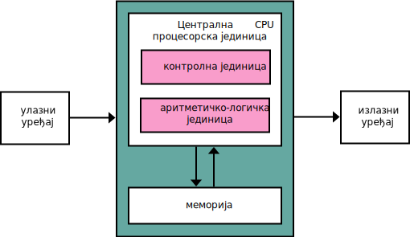

Основе рачунарства
ИКТ I - Лекције 1-4
Информационо-комуникационе технологије
I разред средње школе
Лекција 1: Области рачунарства и информатике
У оквиру ове теме упознаћеш се са основним принципима и начином рада рачунара.
Оријентационо време за изучавање: 8 часова, односно 4 недеље.
Шта је информатика?
Информатика се бави прикупљањем, обрадом и преносом информација и применом рачунара у различитим областима живота. Различитим областима информатике била је посвећена прва тема.
Шта је рачунарство?
Рачунарство се бави проучавањем процеса рачунања, израдом и програмирањем рачунара и питањима да ли се и колико се ефикасно нешто може израчунати. Ова друга тема посвећена је рачунарству.
Области рачунарства
Неке (од многих) области рачунарства:
- Хардверско инжењерство - Развој рачунарских система
- Софтверско инжењерство - Израда и одржавање сложених програма и програмских система
- Рачунарске мреже - Повезивање рачунара ради размене података
- Базе података - Организација велике количине података
- Информациони системи - Системи који омогућују прикупљање, организацију, обраду, чување, претраживање и приказивање података из одређене области примене рачунара
- Рачунарска графика - Израда слика и анимација и њихова примена у уметности, играма, медицини, итд.
- Криптографија и заштита - Развој техника за заштиту података од неовлашћеног приступа
- Вештачка интелигенција - Машинско учење, рачунарски вид, препознавање слика, истраживање података, итд.
Питања за размишљање:
- Која област рачунарства те највише занима и зашто?
- Где у свакодневном животу срећеш примене рачунарства?
- Како мислиш да ће се рачунарство развијати у будућности?
Лекција 2: Принципи рада рачунара
Како раде рачунари?
Човек је одувек правио машине које му помажу да нешто уради, да реши неки проблем. Најпре су то биле машине које помажу у обављању мануелних послова. Врло брзо људи су почели да размишљају како да направе машине које би им помогле у рачунању или у неким сложенијим мисаоним радњама.
У почетку, рачунари су могли само да обављају основне рачунске операције. Временом су се развили тако да могу да обрађују текст, слике, звук, итд.
Четири основне радње рачунара
Машине које се користе за обраду података извршавају четири основне радње:
- Улаз информација - тастатура, миш, микрофон, камера, екран осетљив на додир
- Складиштење информација - унете информације се складиште у меморију рачунара
- Обрада информација - ускладиштене информације се обрађују у процесору и резултати се враћају у меморију
- Излаз информација - екран, звучник, штампач - информације из меморије се приказују на излазу (слика, текст, звук, сигнал за управљање роботом)
Напомена: Код рачунара повезаних на интернет, излаз из једног рачунара може да буде улаз у други рачунар.
Процес обраде података
У рачунар улазе подаци кроз улазне јединице и смештају се у унутрашњу меморију. Процесор их узима, обрађује и враћа у унутрашњу меморију. Ова обрада се врши према инструкцијама које су записане у програму. На крају, кад се обрада података заврши, резултати рада се шаљу на излазне јединице.
Фон Нојманов концепт
Погледај поново првобитну шему Фон Нојмановог концепта рачунара, сада део историје рачунарства. Да ли уочаваш везу између те шеме и управо побројаних основних радњи које извршава рачунар?

Питања за размишљање:
- Наведи примере улазних јединица које користиш свакодневно.
- Како мислиш зашто је важно складиштење података у меморији?
- Шта се дешава ако неки од четири корака није могућ?
Лекција 3: Компоненте рачунарског система
Основне компоненте рачунара
Сваки рачунарски систем састоји се од хардвера (физичких компоненти) и софтвера (програма). Да би рачунар функционисао, потребне су му следеће основне компоненте:
1. Централна процесорска јединица (ЦПУ)
ЦПУ (енгл. Central Processing Unit) је "мозак" рачунара који:
- Извршава програмске инструкције
- Обавља математичке и логичке операције
- Контролише рад других компоненти
- Мери се фреквенцијом у гигахерцима (GHz)
Делови ЦПУ-а
- Контролна јединица - управља извршавањем инструкција
- Аритметичко-логичка јединица (АЛУ) - обавља рачунске операције
- Регистри - брза меморија за привремено чување података
2. Меморija
Меморија служи за чување података и програма. Постоје два основна типа:
Радна меморија (RAM)
- RAM (Random Access Memory) - привремена меморија
- Брза је, али се садржај губи када се рачунар искључи
- Мери се у гигабајтима (GB)
- Што више RAM-а, рачунар може да покрене више програма истовремено
Трајна меморија
- Хард диск (HDD) - механички уређај са дисковима
- SSD диск - електронски уређај без покретних делова (бржи)
- Садржај остаје сачуван и када се рачунар искључи
- Мери се у гигабајтима (GB) или терабајтима (TB)
3. Матична плоча
Матична плоча (енгл. Motherboard) је главна плоча која:
- Повезује све компоненте рачунара
- Садржи слотове за RAM меморију
- Има сокет за процесор
- Садржи различите конекторе и портове
4. Напајање
Напајање (енгл. Power Supply Unit - PSU) преводи наизменичну струју из мреже у једносмерну струју коју користе компоненте рачунара.
Улазно-излазни уређаји
Улазни уређаји
- Тастатура - за унос текста
- Миш - за навигацију и селекцију
- Микрофон - за унос звука
- Камера - за унос слике и видеа
- Скенер - за дигитализацију докумената
Излазни уређаји
- Монитор - за приказ слике
- Звучници/слушалице - за репродукцију звука
- Штампач - за штампање на папир
Графичка карта
Графичка карта (енгл. Graphics Card или GPU) је специјализована за:
- Обраду и приказ слика на монитору
- Убрзање графичких израчунавања
- Подршку за игре и мултимедијални садржај
- Може бити интегрисана (у процесор) или дискретна (засебна карта)
Задатак за размишљање
Замисли да правиш рачунар за:
- Канцеларијски рад (текст, интернет, мејл)
- Гејминг (модерне игре)
- Видео монтажу (обрада великих видео датотека)
Које компоненте би требало да буду најјаче за сваку од ових намена?
Занимљивост: Закон Мура
Муров закон каже да се број транзистора на процесору удвостручује сваке две године. Овај закон предвиђа како ће се развијати рачунарска технологија.
Гордон Мур, један од оснивача компаније Intel, формулисао је овај закон 1965. године!
Лекција 4: Дигитални уређаји
Шта су дигитални уређаји?
Дигитални уређаји су електронски уређаји који раде са дискретним (одвојеним) вредностима података, за разлику од аналогних уређаја који раде са континуираним сигналима.
Карактеристике дигиталних уређаја:
- Користе бинарни систем (0 и 1)
- Подаци се чувају и обрађују као дискретне вредности
- Мање су осетљиви на шум и интерференције
- Омогућавају прецизну репродукцију података
Врсте дигиталних уређаја
1. Рачунари
Стони рачунари (Desktop)
- Предности: Јаке перформансе, могућност надоградње, већи екрани
- Мане: Заузимају простор, нису преносни
- Употреба: Канцеларијски рад, гејминг, професионална употреба
Лаптопови (Laptop)
- Предности: Преносивост, уграђени екран и тастатура
- Мане: Ограничене могућности надоградње, слабија батерија
- Употреба: Рад на путу, студенти, презентације
Таблети
- Предности: Лаки, дуготрајна батерија, осетљив екран
- Мане: Ограничене могућности уноса текста
- Употреба: Читање, мултимедија, основне апликације
2. Мобилни уређаји
Паметни телефони (Smartphones)
- Комбинују функције телефона и малог рачунара
- Приступ интернету, камера, GPS навигација
- Велики број апликација
- Увек доступни захваљујући преносивости
Паметни сатови (Smartwatches)
- Праћење здравља и физичке активности
- Примање обавештења са телефона
- Основне апликације
3. Мултимедијални уређаји
Дигитални фотоапарати
- DSLR камере: Професионалне, мењиви објективи
- Компактне камере: Мале, једноставне за употребу
- Акцијске камере: Отпорне, за спортске активности
Дигитални аудио плејери
- MP3 плејери
- Стриминг уређаји
- Дигитални радио пријемници
Паметни дом (Smart Home)
Дигитални уређаји све више постају део нашег дома:
Паметни уређаји за дом:
- Паметни ТВ - приступ интернету, стриминг сервиси
- Паметни фрижидери - праћење садржаја, листе за куповину
- Паметне сијалице - даљинско управљање, мењање боја
- Паметни термостати - аутоматско подешавање температуре
- Дигитални асистенти - гласовне команде (Alexa, Google Assistant)
Интернет ствари (IoT)
IoT (Internet of Things) представља мрежу физичких уређаја који су повезани на интернет и могу да комуницирају између себе.
Примери: паметне сијалице које се укључују када дођеш кући, фрижидер који поручује млеко када се потроши.
Игровне конзоле
Специјализовани дигитални уређаји за игре:
Врсте конзола:
- Стационарне конзоле: PlayStation, Xbox, Nintendo Switch (док режим)
- Портабилне конзоле: Nintendo Switch, Steam Deck
- Ретро конзоле: Mini верзије старих конзола
Носиви дигитални уређаји
Фитнес трекери
- Праћење броја корака
- Мерење пулса и калорија
- Праћење сна
- Водоотпорност за пливање
Задатак за истраживање
Направи листу свих дигиталних уређаја које користиш током једног дана. Класификуј их у категорије:
- Рачунари и слични уређаји
- Мобилни уређаји
- Мултимедијални уређаји
- Паметни уређаји
Који уређај користиш најчешће и зашто?
Дигитални јаз
Дигитални јаз представља разлику између људи који имају приступ дигиталним уређајима и интернету и оних који немају.
Ова разлика може утицати на образовање, запошљавање и учешће у друштву. Важно је радити на смањивању дигиталног јаза.
Будућност дигиталних уређаја
Технологија се брзо развија, и очекујемо:
- Веша реалност (VR) и проширена реалност (AR)
- Вештачку интелигенцију у више уређаја
- 5G мреже за бржу комуникацију
- Квантне рачунаре за сложене проблеме
- Биометријску идентификацију (отисак прста, препознавање лица)